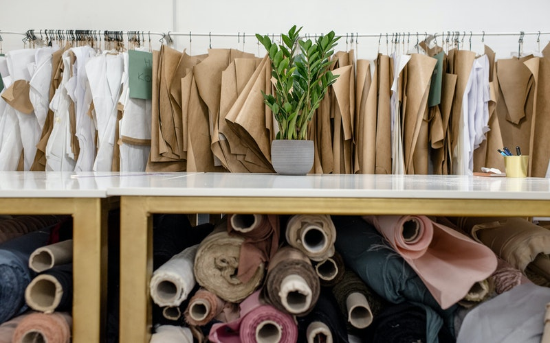
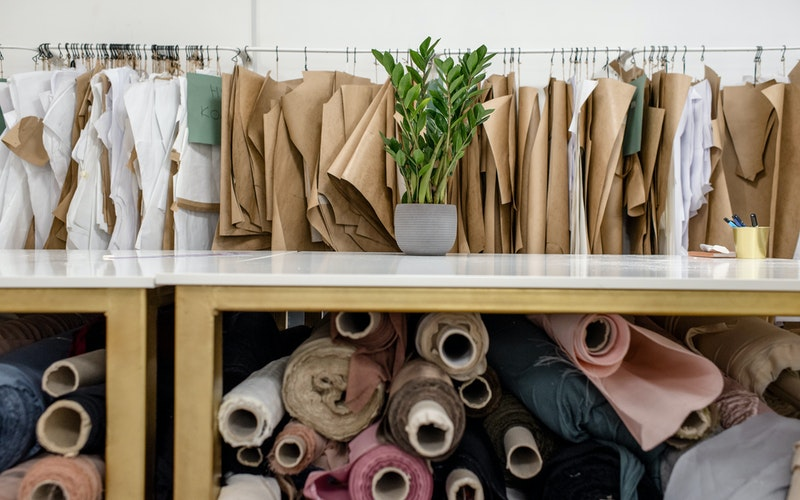

Knit Concern Limited
100% Export Oriented Composite Knitwear Solution
With a mission of providing very high quality knit apparel to the international market, Knit Concern Group emerged in 1990 and has started manufacturing and exporting since 1992.
Having all vertical setups as a full knit project situated in a single 20 acre premise, it is the country’s one of the few elite private sector business groups which not only serves the international buyers with the height of professionalism but also contributes in terms of wealth, Welfare and Eco-friendliness to its homeland. One of the top taxpayers in the country, Knit Concern is now employing about 16,000 people.
In short, top class human resource, cutting-edge technology, production capacity, efficiency and unique organizational dexterity to quickly respond to the changes in design and style in the international apparel markets have steadily brought forward Knit Concern as a new frontline player in the global apparel market.
Knit Concern’s home base is Narayanganj – a township hosting the largest river port of Bangladesh. Besides, Narayanganj has been one of the largest centers for textiles and garments in this subcontinent ever since the middle age when it was world famous for its ethereal Muslin. This tradition Subsequently has ultimately continued to turn Narayanganj into an obvious place for knitwear industry – the country’s most vibrant industrial epic today. A busy port, a rich tradition, availability of skilled artisans, and a range of other facilities, amenities and possibilities have made Narayanganj the ideal place for Knit Concern Group.
At present, on a single and full-fledged campus at Godnail, Narayanganj, about 16,000 skilled people of Knit Concern are producing about 1,70,000 pieces of very high quality knit garments and 60,000 pieces of lingerie per day. There are many indicators that may sketch the profile of Knit Concern’s business success but, perhaps, the increase of its export alone, from merely US$1.03 million in 1992 to about US$ 114.50 million in 2019, would show the degree of its exponential growth.
 
